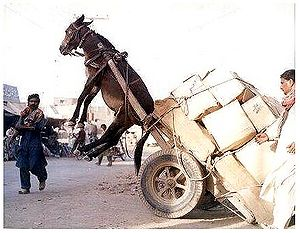

NPI
 De: La Frikipedia, la enciclopedia extremadamente seria.
De: La Frikipedia, la enciclopedia extremadamente seria.
| De la serie tribus urbanas del mundo:
|
| NPI
|
Ejemplo de la tribu
|
| Lo más parecido a un NPI que se encuentra en esta web
|
|
| Hábitat
|
La Villa Oculta Del Gañán.
|
| Inteligencia
|
Menos que un cani, o menos
|
| Frase favorita
|
¡¡Shuuum!! Veste fuera´l pueblo, que´s nuestro, ¡¡Shuuum!!
|
| ¿Peligroso?
|
Uno solo no, pero se reproducen por esporas
|
| Obsesión
|
Dar vueltas con el coche una y otra, y otra, y otra, y otra vez e ir a comprar gasolina
|
| Notas
|
Gasolina en abundancia...
|
Los NPI, también conocidos como La Mafia Quesina.
Tribu urbana especialmente rara. Se puede distinguir una mezcla entre ogro o Fraga), pero los fuertes no son lo más normal de ver dado que solo aparecen en momentos arriesgados o cuando les interrumpes mientras tiran petardos en el suelo mirándose y riendo solos mientras aplauden (subnormalización en potencia) para defender a los más tirillas flojos. Cuando algo de eso ocurre, los NPI empiezan a reproducirse por esporas llamar a otros hasta reunirse lo que se podría denominar piara equipo de fúrbo o banda de gitanos.
Se dice que el motivo de que la gasolina suba tanto de precio es que ellos la compran toda para dar vueltas con el coche unas Chorrosocotocientas veces y fardar con sus amiguitos, aunque tengan pocos por el hecho de vivir en un pueblo escondido entre montañas y estiercol.

|
¡LISTA!
Este artículo o sección no es más que una torpe lista. Si crees que vale la pena, edítalo para que tenga párrafos y esas cosas.
|
Frases
Los NPI, por increible que sea, también usan frases características propias, como las que a continuación se mostrarán:
- ¡¡Shuuum!!
- ¡¡Hechale fuego a la barraca!!
- ¿Amos a cojer el coche?
- ¡¡¡Ye!!!, ¡vente 'pa ca'!
- Va, amos al coche a gastar gasolina.
- Mira, la moto de IP anónima, amos a quitarle los retrovisores.
- ¡¡¡¡¡¡¡Gooooooooooooooooooooooooooooooooooooooooooooooooooool!!!!!!!
- ¡¡Me gusta la gasoliiiina, dame más gasoliiiina!!

la única moto que les gusta
- Amos al huerto.
- Mmmmmmm... que buena que'stás.
- ¡¡YEEEEEEEEE!!
- Enga, yo me voy a las garroferas...
Siglas "NPI"
Desde siempre NPI a querido decir "Ni Puta Idea ((eso pega con ellos, nonca tienen ni idea de lo que pasa ((subnormalización en potencia)) )) pero esta tribu urbana le ha conseguido nuevos significados a esa acronimia:
- Nos Petamos con Indiferencia
- Nuestros Penes Inertes
- Nosotros Parecemos Imbéciles ((lo son))
- No Poseemos Inteligencia ((subnormalización en potencia))
- No Pensamos
Igual
- Ni Puta Idea
Adoran...
- ...La gasolina
- ...Los coches
- ...Los tractores más que los coches
- ...Los caballos y los burros más que los tractores ((subnormalización en potencia))
- ...Dar vueltas con el coche inumerables veces ((subnormalización en potencia))
- ...Tirar petardos al suelo y reirse mientras aplauden ((subnormalización en potencia))
 Los valientes no temen a esto...
- ...Escupir en el suelo mientras se rascan el culo
- ...Gritar
- ...Ir de rosa
- ...Ir de "guays"
- ...Ir de "gays"
- ...Ir al huerto
- ...Hablar clingon ((subnormalización en potencia))
- ...Fardar delante de sus amiguitos
- ...A IP Anónima
- ...Los briconsejos
- ...Seguir a los grupos de amigos en los que hay una chica o más dado que en su grupo no hay
- ...Seguir a los que ellos consideran frikis
- ...El fútbol
- ...El fúrbo
- ...No vocalizar ((subnormalización en potencia))
- ...Los
penes tubos de escape
- ...Cuidar los granos de la cara ((acné juvenil)) ((subnormalización en potencia))
- ...Vestir a la moda para parecer incultos y no ser insultados por la calle cuando llevan la azada y la ropa llena de barro y mierda ((normalmente de obeja))
- ...Jugar a la baraja española en un bar de jubilados como entrenamiento para la jubilación.
- ...Ser proyectos de
gilipollas gañanes
- ...Viajar ((con el coche... ¡ah! y con gasolina, claro))
No Adoran...
- ...Los retrovisores de las motos

Todos tienen en común haber estudiado aquí
- ...A Dios ((subnormalización en potencia))
- ...A Diox ((subnormalización en potencia))
- ...Las motos por el hecho de no ser coches
- ...Las motos por el hecho de no tener cuatro ruedas
- ...A los forasteros
- ...Barcelona y ni siquiera son del Madrí
- ...Las patadas en los cojones
- ...Que digan que los coches son más potentes que los tractores
- ...Que digan que los tractores son más potentes que un caballo o un burro
¿De Donde Proceden?
Provienen de estos lugares:
- De tu casa
- De mi culo
- De tu culo
Planetas De Los Que Proceden
Pero sobretodo de estos planetas:
Pero NUNCA de la Tierra
¿De Qué Mutaron?
No son humanos, mutaron de estas substancias:
- De la gripe A
- Del moco
- De una mierda y media
La gente opina
Este artículo es de:
5 Estrellas
|
Número de votos: 1
|
Es una: Caca
|
Autor(es):
- Alex el Mono
- Lljosemll
- Friki-ebizo
- Jesus el mejor
- Jidef
Frikipedia 2005-2016, Licencia
GFDL 1.2 - Extraído por FrikiLeaks